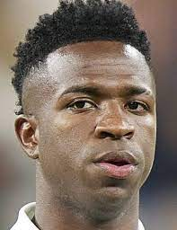
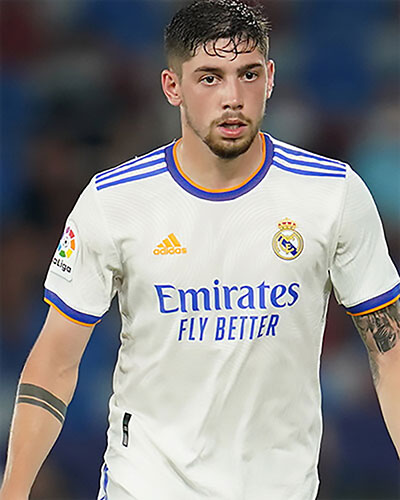
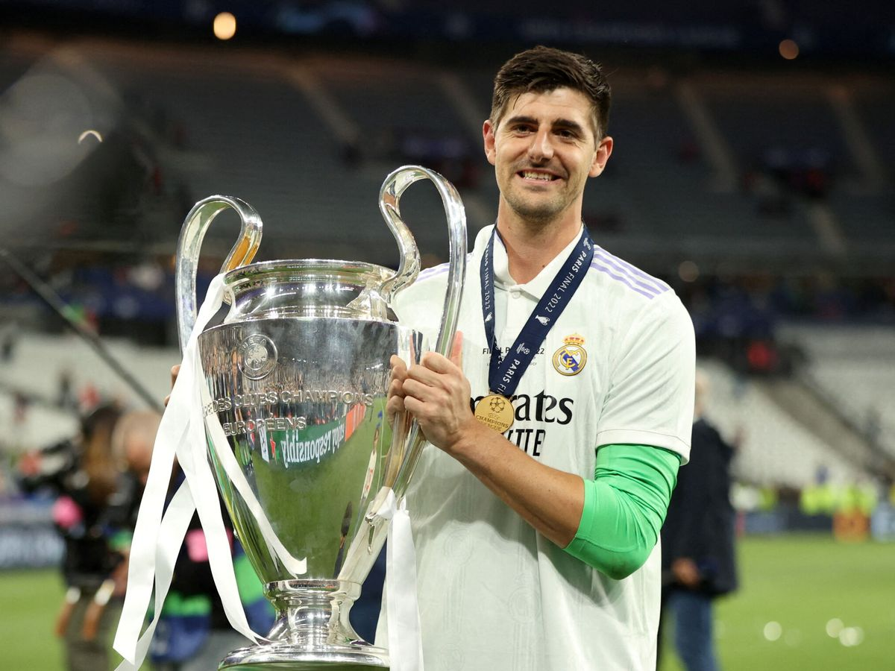

Vinicius junior
Dorsal 20
Jugador (Extremo) Del Real Madrid.
Vinícius José Paixaõ de Oliveira Júnior, más conocido como Vinícius Júnior o Vini Jr., es un futbolista brasileño de 22 años con nacionalidad española que juega como delantero en el Real Madrid C. F. de la Primera División de España.
Jugador (Extremo) Del Real Madrid.
Rodrygo Silva de Goes, es un futbolista brasileño de 22 años que juega como delantero en el Real Madrid C. F. de la Primera División de España.Fue candidato al Golden Boy como mejor jugador del mundo sub-21 en 2019 y 2020, donde fue seleccionado entre los finalistas del premio.

Federico Valverde
Dorsal 15
Jugador (Dif.Posiciones) Del Real Madrid.
Federico Santiago Valverde Dipetta, conocido deportivamente como Fede Valverde, es un futbolista uruguayo de 24 años que juega como centrocampista en el Real Madrid C. F. de la Primera División de España.
Jugador (Delantero Centro) Del Real Madrid.
Karim Benzema es un futbolista francés de ascendencia argelina de 35 años que juega como delantero en el Real Madrid Club de Fútbol de la Primera División de España desde la temporada 2009-10, Es el Actual ganador del Balon de Oro.

Thibaut Courtois
Dorsal 1
Jugador (Arquero) Del Real Madrid.
Thibaut Nicolas Marc Courtois, más conocido como Thibaut Courtois, es un futbolista belga de 30 años que juega como portero en el Real Madrid C. F. de la Primera División de España. El 28 de mayo de 2022 fue elegido mejor jugador de la final de la Champions League celebrada en París, entre Real Madrid y Liverpool, merced a su decisiva actuación para que el equipo blanco conquistara su decimocuarta Copa de Europa, también como "La Decimocourtois". Al término del curso, fue designado como el segundo mejor jugador de la temporada 2021-22 por el diario Marca (junto a sus compañeros Karim Benzema, primero, y Vinícius Júnior, tercero)